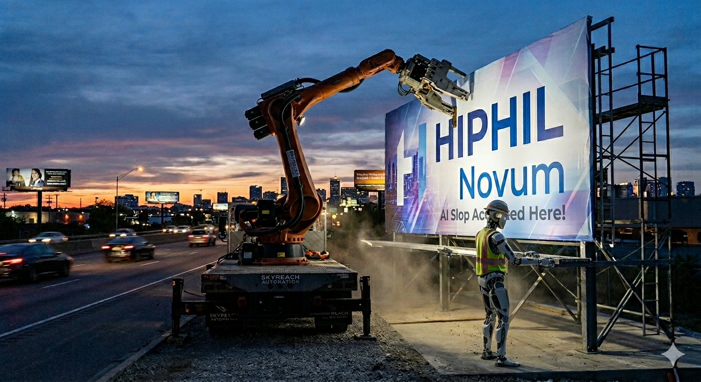

AI & Technology
HIPHIL Novum: The AI Slop Journal
HIPHIL Novum published Beijen and de Heide's AI slop study on the Pauline letters using a BiLSTM with AI-generated non-functional code. They declined my critique, and their peer reviewer doesn't understand overfitting.